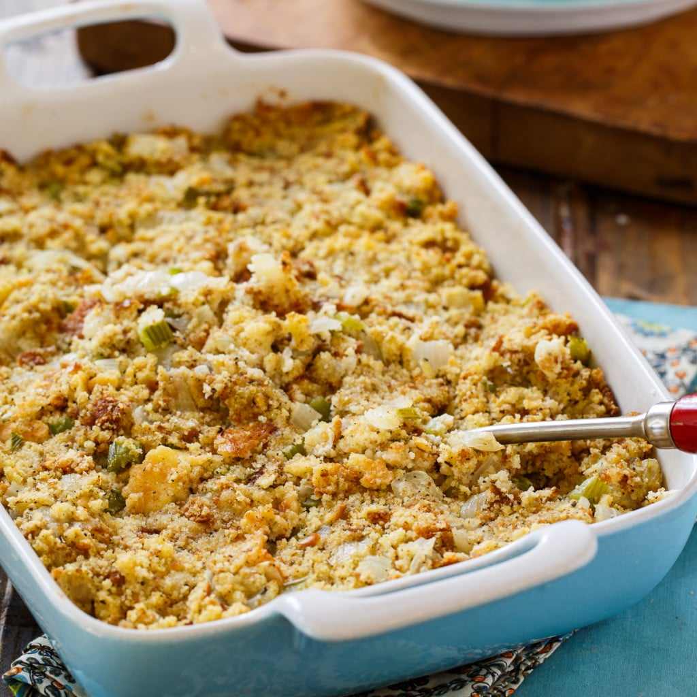

Dressing Recipe

Ingredients
- 1lbs - slightly stale bread
- 4tbsp - butter
- 2 onions - diced
- 2 celery stalks - diced
- .25cups - minced parsley
- 1tsp - sage
- 1tsp - thyme
- .75tsp - salt
- .5tsp - black pepper
- 2cups - chicken broth
- 2 large eggs
Steps
- Lay bread flat on sheet pan. Heat oven to 400deg. Bake until golden, 12-15min.
Reduce heat to 350deg.
- During step 1: melt butter in large skillet - med-high heat.
Add onions/celery, saute until soft, 8-10min.
In large bowl, mix bread, veges, remaining ingredients.
Move to greased 3qt baking dish. Cover with foil, bake 30min.
Remove foil, bake 10min
- Serve immediately